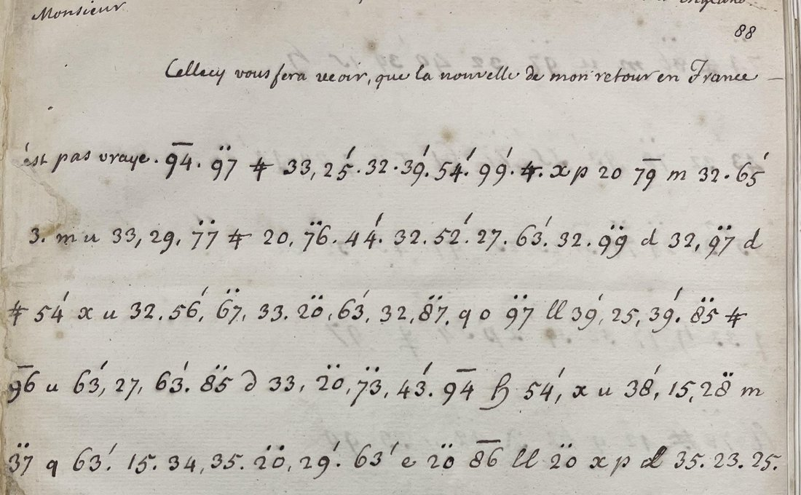

01 The letter
Add MS 4200 is one of the Birch volumes of Thurloe’s state papers. Folio 88 is headed in an English hand A Letter from Bordeaux the French Amb.r in England. The letter opens in clear, Monsieur, Cellecy vous fera veoir, que la nouvelle de mon retour en France n’est pas vraye, and continues in cipher for 63 lines over five pages. It returns to clear with on n’a point icy aucune nouvelle de la flotte depuis qu’elle a paru à la hauteur d’Escosse and closes De Bordeaux, A Londres 30 May 1653. The English made a second copy of the opening and a second copy of the ending, with a frequency count (DECODE R8393 and R8391), and started contact tables on the commonest signs (R8386, R8388, R8389). None of these reaches a reading.

The plaintext is not in print. Birch printed twelve of Bordeaux’s despatches of 1653 in the Thurloe State Papers and Guizot sixty more from the French foreign ministry’s archive, but neither has this one. Satoshi Tomokiyo published a provisional transcription of the cipher on cryptiana. His list gives the companion letter, Mazarin to Bordeaux of 22 June 1654, as solved by George Lasry in February 2025.
02 The first attempt, and why it failed
Tomokiyo’s transcription has 810 tokens over 156 symbols. There are 24 graphic signs (u, x, d, ll, m, …), plain numbers, and numbers carrying a prime, two dots or an overbar. Brienne’s office used one design for its ciphers of 1651–54, known from two recovered keys: his cipher to d’Estrades of 1651, and Lasry’s key for the 1654 letter. In both, letters are signs or low numbers, and the syllables ba be bi bo bu ca ce … take consecutive numbers in alphabetical order through marked series, with a few common words filed in their alphabetical place. On 16 September a simulated-annealing solver was built with that order as a hard constraint and tested on controls: a Bordeaux despatch of 1654 enciphered with a random key of the same design and the same size. It read three of six control runs to within 1% of the key. On the letter, 21 runs over three series orders stopped at the level of the control’s failed runs. A second control, with one diacritic in ten misread, fell to 52% and 9%, and the notes concluded that a provisional transcription could explain the failure on its own.
That turned out to be the case. Checked against the page images, the transcription has three kinds of fault, and together they are enough to stop a ciphertext-only attack:
- Two signs written as one. The transcription’s d covers two different glyphs, a looped ꝺ that is u and a backward ∂ that is n (conte·n·te·me·∂·t, Bordea·ꝺ·x). The English frequency count on f. 92 lists them on separate lines, so the 1653 analysts saw two signs.
- Dropped tokens and marks. In line 2, plus florissantes needs 76¨ (lo) and 27 (n), which the transcription leaves out. Elsewhere 96¨ na appears as 96‾, 79′ vous as 74′, 64′ ti as b 4′, and 97¨ ne as a plain 97. Twenty-one corrections in all. One of them, the 52′ of commissaires, was omitted by the clerk himself and is restored from the duplicate R8393.
- The clerk’s own omissions. He often writes a syllable number without its mark: 38 for et, 43 for 43′ re, 54 for si, 97 for ne. In this design the mark is what separates re from a letter. A solver that trusts the marks puts those tokens in the wrong series.
03 The English key sheet
BL Add MS 32263 is the Willes family’s volume of cipher keys, 1653–1850, from the Deciphering Branch. Folio 1 is headed To M.r Bordeaux French M.r at London 1653, Key &
Calculation, and Discovered Aug. 20th 1832. That is how the year reads, and the sheet is printed ledger paper numbered 2801 to 3000, so it is a later working, not a key of 1653. The left half is the
calculation: for each number, the letters that contact counts allowed. The right half has the settled values in boxes, and a panel headed Principal gives the commonest signs:
u = n, 32 = s, m = e, 33 = t, 34 = u, 20¨ = de, 63′ = te, a = r.
The sheet is transcribed in bordeaux/key7537.txt. It is the Brienne design exactly:
| Series | Values on the sheet |
|---|---|
| plain | 15–37 the alphabet, a b c d e f g h i k l m n o p q r s t u x y z |
| prime ′ | pa 25, pe 26, po 28, pour 31, par 32, qui 38, que 39, ra re ri ro 42–45, se si so 53–55, te 63, to 65, ve vi vo 73–75, vous 79; also negociation 19 |
| two dots ¨ | de di do du 20–23, dans 24, et 28, estre 29, estat 32, fa fe fi fo fu 37–41, fort 42, ha he hi ho hu 60–64, il 72, la le li lo lu 73–77, les 78, leurs 83, ma me mi mo 84–87, na ne ni no nu 96–100 |
| overbar ‾ | ba be bi bo bu 83–87, bien 89, bon 90, ca ce ci co cu 93–97; also Angleterre(?) 75 |
The gaps fill by the same order and are confirmed in the text: 29′ pu (deputez), 64′ ti (resolutions), 19¨ da (d’accord), 49¨ ge (obliger, purgée), 66¨–70¨ ja je ji jo ju (sujet, jours, jusque). Three words are fixed by context and fit their alphabetical slots: 40′ quoy (pourquoy, quoy que), 41′ quand, 79¨ leur. So are 16¨ comme and 53¨, which is General, Cromwell, both times it occurs. The graphic signs beyond the Principal list come from the text: x = o, x p written together = a, ꝺ = u, ∂ = n, q = i, ll = r, the stroked 4 = s, ≠ = g, h = p, H = z, 9 = i, φ = y, λ = s, θ = i, ω = n, ff = t, 〃 = n. Every such value was taken only when it read the same way at each occurrence.
04 The reading
The cipher portion with its clear opening; the writer’s spelling kept; word division and punctuation editorial; [..] a token not read, [word] supplied or doubtful, {code} a nomenclature code not recovered
Cellecy vous fera veoir que la nouvelle de mon retour en France n’est pas vraye. Ce n’est pas que si nos affaires estoyent plus florissantes nous n’eussions sujet de tesmoi[g]ner quelque mescontentement de la reception qui a esté faite aux deputez de Bordeaux. Ils ont esté entendus par deux commissaires du Conseil, et l’audiance que j’avois demandée au General ne me fut donnée qu’après la leur. L’on d’y de[..]er ; ils [..]rent leurs propositions {332} au {396} [..] separées {344}, et je croy que l’on y delibere aussi bien que sur les miennes, quoy qu’après les resolutions prises dans le [Parlement] il ne restast plus qu’à signer les traitez dont nous estions demeurez d’accord. L’on m’advertist de plusieurs endroits qu’indirectement on veut y secourir Bordeaux. C’est pourquoy si vous n’avés point encores offert vostre mediation, elle se pourroit surseoir jusqu’à ce que je voye quelle sera la conduite de cet Estat. Je n’ay pas laissé dans mon dernier discours d’asseurer que Sa Majesté [s’y] employeroit avec affection ; mais s’ils prennent des mesures avec Bordeaux, ils n’auront pas grande confiance à nostre bonne volonté. La crainte que si la [France] se trouve purgée de seditions elle ne favorise le parti du {25}, et la retraite que l’on a donnée au {28}, sont capables de fort [faire] prendre au General une resolution contraire à nos interests. Si les {43} envoyent icy des deputez pour traiter de [..], comme l’on publie, il se [..]era encores plus. Ce n’est pas que son interest propre ne le deust obliger de rechercher nostre alliance, mais il croit y p[..] à temps quand mesmes il auroit delivré Bordeaux de la misere où elle se trouve. Dans peu de jours j’en seray informé avec plus de certitude. On n’a point icy aucune nouvelle de la flotte …
English
A paraphrase. Brackets carry over where the reading is doubtful.
This will show you that the news of my return to France is not true. Even if our affairs were more flourishing, we would still have reason to show some displeasure at the reception given to the deputies of Bordeaux. They were heard by two commissioners of the Council, and the audience I had asked of the General was not given me until after theirs. [..]; they [..] their proposals [..], and I believe their proposals are being deliberated as well as mine, although after the resolutions taken in [Parliament] nothing remained but to sign the treaties we had agreed on. I am told from several quarters that they mean to help Bordeaux indirectly. So if you have not yet offered your mediation, it could be held back until I see what this State’s conduct will be. In my last speech I did not fail to assure them that His Majesty would [apply himself to it] with affection; but if they come to terms with Bordeaux, they will not have much confidence in our good will. The fear that a [France] purged of sedition would favour the party of {25}, and the refuge that has been given to {28}, could well [make] the General take a resolution against our interests. If the {43} send deputies here to treat of [..], as is said, it will be [..] still more. It is not that his own interest ought not to oblige him to seek our alliance; but he thinks he can [..] in time, even if he had freed Bordeaux from the misery it is in. In a few days I shall know more certainly.
The clear close, read from the duplicate R8391, gives the other news: nothing of the fleet since it was seen off Scotland. It also reports that Cromwell aura ung corps composé de sept vingt personnes choisis par l’armée, et approuvés par les provinces, a body of seven score chosen by the army, which is the Nominated Assembly that met in July. The Swedish resident has no answer to his offer, and the Portuguese none on his peace treaty.
05 What it says
Bordeaux-Neufville had come to London at the end of 1652 to win recognition of the young Louis XIV’s government from the Commonwealth and to keep England out of the Fronde. The city of Bordeaux, held by the Ormée and Condé’s party against the King, had sent its own deputies to ask for English help. The letter is written four weeks after Cromwell dissolved the Rump (20 April 1653, old style). Its complaint is about order and precedence. The Council heard the rebels’ deputies through two commissioners, and only then gave the King’s envoy his audience with le General. Bordeaux reads this as a sign that the treaty, settled except for the signing, is being weighed against the rebels’ proposals. His advice is tactical. Brienne should not offer French mediation until the English position is clear, because help for the city, even indirect, would show there is no trust on the English side. The English fear, as he reports it, is that a France at peace at home would back the Stuarts. In the event the city surrendered to the royal army at the end of July 1653, and the Anglo-French treaty was not signed until 1655.
06 What remains open
- Nomenclature codes. 25‾ and 28‾ (le parti du {25}, la retraite que l’on a donnée au {28}) are most likely Stuart names: Charles II, or the Duke of York, or Prince Rupert, whose fleet had used French ports. 43‾ (si les {43} envoyent icy des deputez) is a body that could send deputies. 332, 344 and 396‾ stand in the sentence about the deputies’ proposals. 31‾ is read as Parlement from context alone.
- Rare tokens. 6¨ (ils [..]rent leurs propositions), 98 and 10 (both once), 30′ (traiter de [..]), 35′, 68′, 14′ (read as s’y), 5¨ (read li in delibere), and 46¨ (la [France], which fits its alphabetical slot but nothing else confirms). The duplicate of the ending agrees with the original token for token, so 68′ and the 24 in quand mesmes il auroit are what the clerk wrote.
- 42¨. The sheet has fort; the sense of capables de fort prendre would be better served by faire. The value is left as the sheet gives it.
- The key sheet’s date. Aug. 20th 1832 is how the heading reads. Whether it records a later re-solution or a copy of an older key was not investigated.
07 Sources
- British Library, Add MS 4200 ff. 88–90 (the letter), f. 92 and ff. 93–93v (frequency count and duplicate of the ending), the duplicate of the opening, and the English contact tables ff. 74, 78: DECODE records R8390, R8391, R8393, R8386, R8388, R8389 (de-crypt.org, login).
- British Library, Add MS 32263 f. 1, “To M.r Bordeaux French M.r at London 1653, Key & Calculation”: DECODE record R7537.
- S. Tomokiyo, “Ciphers early in the reign of Louis XIV”, §3 (cryptiana): the provisional transcription and the listing, and the image of Lasry’s 1654 key.
- T. Birch (ed.), A Collection of the State Papers of John Thurloe, vol. 1 (1742); F. Guizot, Histoire de la République d’Angleterre et de Cromwell, vol. 2 (1854), appendix: other despatches of Bordeaux in 1653, not this one.
The key sheet transcription (key7537.txt), the values added from context (key_guess.txt), the corrected transcription (ct2.txt), the decoder
(apply_key.py), the reading (plaintext_1653.txt), and the 16 September solver with its controls are in the repository (bordeaux/). The British Library’s images are not
reproduced, because the Library’s terms require its permission to publish them.